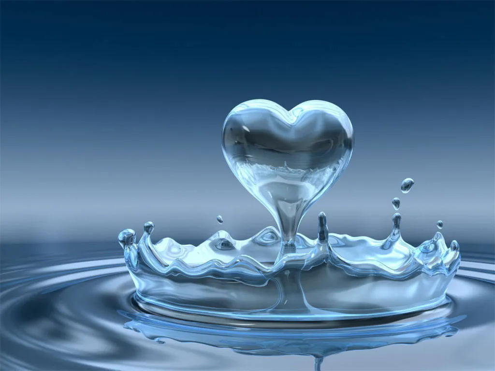

Sobre el agua
El agua es el principal regulador de la temperatura terrestre. El agua es la única
sustancia presente
en la Naturaleza
que puede encontrarse tanto en forma sólida,
como líquida o gaseosa. Los cambios de estado del agua (que existe en su
mayor parte en estado líquido) se producen debido a la cercanía de sus molécula
Que es el agua
El agua es la sustancia más abundante
del planeta y la única que se encuentra en la atmósfera
en estado líquido, sólido y gaseoso
. El 97% es agua que pertenece a los océanos y el resto es agua dulce.
